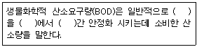

한식조리기능사 (2012-10-20 기출문제)
1과목: 식품위생 및 법규
1. 우리나라에서 허가된 발색제가 아닌 것은?
- 아질산나트륨
- 황산제일철
- 질산칼륨
- 아질산칼륨
(정답률: 35%)

2. 다환방향족 탄화수소이며, 훈제육이나 태운 고기에서 다량 검출되는 발암 작용을 일으키는 것은?
- 질산염
- 알코올
- 벤조피렌
- 포름알데히드
(정답률: 73%)
3. 에탄올 발효시 생성되는 메탄올의 가장 심각한 중독 증상은?
- 구토
- 경기
- 실명
- 환각
(정답률: 84%)
4. 식품의 변질현상에 대한 설명 중 틀린 것은?
- 통조림 식품의 부패에 관여하는 세균에는 내열성인 것이 많다.
- 우유의 부패시 세균류가 관계하여 적변을 일으키기도 한다.
- 식품의 부패에는 대부분 한 종류의 세균이 관계한다.
- 가금육은 주로 저온성 세균이 주된 부패균이다.
(정답률: 74%)
5. 일반적으로 식품 1g중 생균수가 약 얼마 이상일 때 초기부패로 판정하는가?
- 102개
- 104개
- 107개
- 1015개
(정답률: 86%)
6. 독소형 세균성 식중독으로 짝지어진 것은?
- 살모넬라 식중독, 장염 비브리오 식중독
- 리스테리아 식중독, 복어독 식중독
- 황색포도상구균 식중독, 클로스트리디움 보툴리늄균 식중독
- 맥각독 식중독, 콜리균 식중독
(정답률: 84%)
7. 복어독 중독의 치료법으로 적합하지 않은 것은?
- 호흡촉진제 투여
- 진통제 투여
- 위세척
- 최토제 투여
(정답률: 74%)
8. 식품 취급자의 화농성 질환에 의해 감염되는 식중독은?
- 살모넬라 식중독
- 황색포도상구균 식중독
- 장염비브리오 식중독
- 병원성대장균 식중독
(정답률: 84%)
9. 과실류, 채소류 등 식품의 살균목적으로 사용되는 것은?
- 초산비닐수지(polyvinyl acetate)
- 이산화염소(chlorine dioxide)
- 규소수지(silicone resin)
- 차아염소산나트륨(sodium hypochlorite)
(정답률: 59%)
10. 다음 중 내인성 위해 식품은?
- 지나치게 구운 생선
- 푸른곰팡이에 오염된 쌀
- 싹이 튼 감자
- 농약을 많이 뿌린 채소
(정답률: 57%)
11. 식품위생법상 허위표시, 과대광고의 범위에 해당하지 않는 것은?
- 국내산을 주된 원료로 하여 제조, 가공한 메주, 된장, 고추장에 대하여 식품영양학적으로 공인된 사실이라고 식품의약품안전청장이 인정한 내용의 표시, 광고
- 질병치료에 효능이 있다는 내용의 표시, 광고
- 외국과 기술 제휴한 것으로 혼동할 우려가 있는 내용의 표시, 광고
- 화학적 합성품의 경우 그 원료의 명칭 등을 사용하여 화학적 합성품이 아닌 것으로 혼동한 우려가 있는 광고
(정답률: 72%)
12. 우리나라 식품위생법의 목적과 거리가 먼 것은?
- 식품으로 인한 위생상의 위해 방지
- 식품영양의 질적 향상 도모
- 국민보건의 증진에 이바지
- 부정식품 제조에 대한 가중처벌
(정답률: 69%)
13. 식품위생법상에서 정의하는 "집단급식소"에 대한 정의로 옳은 것은?
- 영리를 목적으로 하는 모든 급식시설을 일컫는 용어이다.
- 영리를 목적으로 하지 않고 비정기적으로 1개월에 1회씩 음식물을 공급하는 급식시설도 포함된다.
- 영리를 목적으로 하지 아니하면서 특정 다수인에게 계속하여 음식을 공급하는 급식시설을 말한다.
- 영리를 목적으로 하지 않고 계속적으로 불특정 다수인에게 음식물을 공급하는 급식시설을 말한다.
(정답률: 77%)
14. 식품위생법상 식품위생감시원의 직무가 아닌 것은?
- 영업소의 폐쇄를 위한 간판 제거 등의 조치
- 영업의 건전한 발전과 공동의 이익을 도모하는 조치
- 영업자 및 종업원의 건강진단 및 위생교육의 이행 여부의 확인, 지도
- 조리사 및 영양사의 법령 준수사항 이행여부의 확인, 지도
(정답률: 58%)
15. 식품위생법상 영업신고를 하지 않는 업종은?
- 즉석판매제조, 가공업
- 양곡관리법에 따른 양곡가공업 중 도정업
- 식품운반업
- 식품소분, 판매업
(정답률: 72%)
2과목: 식품학
16. 마이야르(Maillard)반응에 영향을 주는 인자가 아닌 것은?
- 수분
- 온도
- 당의종류
- 효소
(정답률: 53%)
17. 다음 중 쌀 가공식품이 아닌 것은?
- 현미
- 강화미
- 팽화미
- a-화미
(정답률: 65%)
18. 다음 중 발효 식품은?(P.82)
- 치즈
- 수정과
- 사이다
- 우유
(정답률: 88%)
19. 채소와 과일의 가스저장(CA저장)시 필수 요건이 아닌 것은?
- pH조절
- 기체의 조절
- 냉장온도 유지
- 습도유지
(정답률: 51%)
20. 단백질에 관한 설명 중 옳은 것은?
- 인단백질은 단순단백질에 인산이 결합한 단백질이다.
- 지단백질은 단순단백질에 당이 결합한 단백질이다.
- 당단백질은 단순단백질에 지방이 결합한 단백질이다.
- 핵단백질은 단순단백질 또는 복합단백질이 화학적 또는 산소에 의해 변화된 단백질이다.
(정답률: 64%)
21. 한천의 용도가 아닌 것은?
- 훈연제품의 산화방지제
- 푸딩, 양갱 등의 젤화제
- 유제품, 청량음료 등의 안정제
- 곰팡이, 세균 등의 배지
(정답률: 56%)
22. 식품의 수분활성도(Aw)에 대한 설명으로 틀린 것은?
- 식품이 나타내는 수증기압과 순수한 물의 수증기압의 비를 말한다.
- 일반적인 식품의 Aw 값은 1보다 크다.
- Aw의 값이 작을수록 미생물의 이용이 쉽지 않다.
- 어패류의 Aw의 0.99~0.98정도이다.
(정답률: 57%)
23. 장기간의 식품보존방법과 가장 관계가 먼 것은?
- 배건법
- 염장법
- 산저장법(초지법)
- 냉장법
(정답률: 63%)
24. 대표적인 콩 단백질인 글로불린(globulin)이 가장 많이 함유하고 있는 성분은?
- 글리시닌(glycinin)
- 알부민(albumin)
- 글루텐(gluten)
- 제인(zein)
(정답률: 71%)
25. 라면류, 건빵류, 비스킷 등은 상온에서 비교적 장시간 저장해 두어도 노화가 잘 일어나지 않는 주된 이유는?
- 낮은 수분함량
- 낮은 PH
- 높은 수분함량
- 높은 PH
(정답률: 81%)
26. 신맛 성분에 유기산인 아미노기(-NH2)가 있으면 어떤 맛이 가해진 산미가 되는가?
- 단맛
- 신맛
- 쓴맛
- 짠맛
(정답률: 54%)
27. 유지의 발연점에 영향을 주는 인자와 거리가 먼 것은?
- 용해도
- 유리지방산의 함량
- 노출된 유지의 표면적
- 불순물의 함량
(정답률: 53%)
28. 다음 당류 중 단맛이 가장 약한 것은?(P.156)
- 포도당
- 과당
- 맥아당
- 설탕
(정답률: 64%)
29. 다음 쇠고기 성분 중 일반적으로 살코기에 비해 간에 특히 더 많은 것은?
- 비타민 A, 무기질
- 단백질, 전분
- 섬유소, 비타민 C
- 전분, 비타민 A
(정답률: 75%)
30. 오징어 먹물색소의 주 색소는?
- 안토잔틴
- 클로로필
- 유멜라닌
- 플라보노이드
(정답률: 63%)
3과목: 조리이론과 원가계산
31. 급식인원이 1000명인 단체급식소에서 1인당 60g의 풋고추조림을 주려고 한다. 발주할 풋고추의 양은? (단, 풋고추의 폐기율은 9%이다.)
- 55kg
- 60kg
- 66kg
- 68kg
(정답률: 59%)
32. 단체급식이 갖는 운영상의 문제점이 아닌 것은?
- 단시간 내에 다량의 음식조리
- 식중독 등 대형 위생사고
- 대량구매로 인한 재고관리.
- 적온 급식의 어려움으로 음식의 맛 저하
(정답률: 42%)
33. 완두콩을 조리할 때 정량의 황산구리를 첨가하면 특히 어떤 효과가 있는가?
- 비타민이 보강된다.
- 무기질이 보강된다.
- 냄새를 보유할 수 있다.
- 녹색을 보유할 수 있다.
(정답률: 81%)
34. 신선한 달걀의 감별법 중 틀린 것은?
- 햇빛(전등)에 비출 때 공기집의 크기가 작다.
- 흔들 때 내용물이 흔들리지 않는다.
- 6% 소금물에 넣어서 떠오른다.
- 깨뜨려 접시에 놓으면 노른자가 볼록하고 흰자의 점도가 높다.
(정답률: 76%)
35. 다음 중 계량방법이 올바른 것은?
- 마가린을 잴 때는 실온일 때 계량컵에 꼭꼭 눌러 담고, 직선으로 된 칼이나 spatula로 깎아 계량한다.
- 밀가루를 잴 때는 측정 직전에 체로 친 뒤 눌러서 담아 직선 spatula로 깎아 측정한다.
- 흑설탕을 측정할 때는 체로 친 뒤 누르지 말고 가만히 수북하게 담고 직선 spatula로 깎아 측정한다.
- 쇼티닝을 계량할 때는 냉장온도에서 계량컵에 꼭 눌러 담은 뒤, 직선 spatula로 깎아 측정한다.
(정답률: 61%)
36. 육류, 생선류, 알류 및 콩류에 함유된 주된 영양소는?
- 단백질
- 탄수화물
- 지방
- 비타민
(정답률: 92%)
37. 젤라틴의 응고에 관한 내용으로 틀린 것은?
- 젤라틴의 농도가 높을수록 빨리 응고된다.
- 설탕의 농도가 높을수록 빨리 응고된다.
- 염류는 젤라틴이 물을 흡수하는 것을 막아 단단하게 응고시킨다.
- 단백질 분해효소를 사용하면 응고력이 약해진다.
(정답률: 47%)
38. 난백으로 거품을 만들 때의 설명으로 옳은 것은?
- 레몬즙을 1~2방울 떨어뜨리면 거품 형성을 용이하게 한다.
- 지방은 거품 형성을 용이하게 한다.
- 소금은 거품의 안정성에 기여한다.
- 묽은 달걀보다 신선란이 거품 형성을 용이하게 한다.
(정답률: 58%)
39. 다음 중 간장의 지미성분은?
- 포도당(glucose)
- 전분(starch)
- 글루탐산(glutamic acid)
- 아스코리빈산(ascorbic acid)
(정답률: 65%)
40. 홍조류에 속하며 무기질이 골고루 함유되어 있고 단백질도 많이 함유된 해조류는?
- 김
- 미역
- 우뭇가사리
- 다시마
(정답률: 75%)
41. 식품의 구매방법으로 필요한 품목, 수량을 표시하여 업자에게 견적서를 제출받고 품질이나 가격을 검토한 후 낙찰자를 정하여 계약을 체결하는 것은?
- 수의계약
- 경쟁입찰
- 대량구매
- 계약구입
(정답률: 62%)
42. 떡의 노화를 방지할 수 있는 방법이 아닌 것은?
- 찹쌀가루의 함량을 높인다.
- 설탕의 첨가량을 늘인다.
- 급속 냉동시켜 보관한다.
- 수분함량을 30~60%로 유지한다.
(정답률: 59%)
43. 우유에 산을 넣으면 응고물이 생기는데 이 응고물의 주체는?
- 유당
- 레닌
- 카제인
- 유지방
(정답률: 57%)
44. 불고기를 만들어 파는데 비용으로 1kg 기준으로 등심은 18000원, 양념비는 3500원이 소요되었다. 1인분에 200g을 사용하고 식재료 비율을 40%로 하려고 할 때 판매가격은?
- 9000원
- 8600원
- 17750원
- 10750원
(정답률: 45%)
45. 육류 조리 과정 중 색소의 변화 단계가 바르게 연결된 것은?
- 미오글로빈 - 메트미오글로빈 - 옥시미오글로빈 - 헤마틴
- 메트미오글로빈 - 옥시미오글로빈 - 미오글로빈 - 헤마틴
- 미오글로빈 - 옥시미오글로빈 - 메트미오글로빈 - 헤마틴
- 옥시미오글로빈 - 메트미오글로빈 - 미오글로빈 - 헤마틴
(정답률: 65%)
46. 머랭을 만들고자 할 때 설탕 첨가는 어느 단계에 하는 것이 가장 효과적인가?
- 처음 젓기 시작할 때
- 거품이 생기려고 할 때
- 충분히 거품이 생겼을 때
- 거품이 없어졌을 때
(정답률: 64%)
47. 마요네즈를 만들 때 기름의 분리를 막아주는 것은?
- 난황
- 난백
- 소금
- 식초
(정답률: 59%)
48. 고체화한 지방을 여과 처리하는 방법으로 샐러드유 제조시 이용되며, 유화상태를 유지하기 위한 가공 처리 방법은?
- 용출처리
- 동유처리
- 정제처리
- 경화처리
(정답률: 42%)
49. 주방의 바닥조건으로 맞는 것은?
- 산이나 알칼리에 약하고 습기, 열에 강해야 한다.
- 바닥전체의 물매는 1/20이 적당하다.
- 조리작업을 드라이 시스템화 할 경우의 물매는 1/100정도가 적당하다.
- 고무타일, 합성수지타일 등이 잘 미끄러지지 않으므로 적당하다.
(정답률: 70%)
50. 다음 중 돼지고기에만 존재하는 부위명은?
- 사태살
- 갈매기살
- 채끝살
- 안심살
(정답률: 83%)
4과목: 공중보건
51. 상수도와 관계된 보건 문제가 아닌 것은?
- 수도열
- 반상치
- 레이노드병
- 수인성 감염병
(정답률: 68%)
52. 규폐증과 관계가 먼 것은?
- 유리규산
- 암석가공업
- 골연화증
- 폐조직의 섬유화
(정답률: 74%)
53. 감염병 관리상 환자의 격리를 요하지 않는 것은?
- 콜레라
- 디프테리아
- 파상풍
- 장티푸스
(정답률: 77%)
54. ( )안에 차례대로 들어갈 알맞은 내용은?

- 무기물질, 15℃, 5일
- 무기물질, 15℃, 7일
- 유기물질, 20℃, 5일
- 유기물질, 20℃, 7일
(정답률: 72%)
55. 실내공기의 오염지표로 사용되는 것은?
- 일산화탄소
- 이산화탄소
- 질소
- 오존
(정답률: 81%)
56. 수인성 감염병의 특징을 설명한 것 중 틀린 것은?
- 단시간에 다수의 환자가 발생한다.
- 환자의 발생은 그 급수지역과 관계가 깊다.
- 발생율이 남녀노소, 성별, 연령별로 차이가 크다.
- 오염원의 제거로 일시에 종식될 수 있다.
(정답률: 71%)
57. 기생충과 인체감염원인 식품의 연결이 틀린 것은?
- 유구조충 - 돼지고기
- 무구조충 - 쇠고기
- 동양모양선충 - 민물고기
- 아니사키스 - 바다생선
(정답률: 77%)
58. 감염병 발생의 3대 요인이 아닌 것은?
- 예방접종
- 환경
- 숙주
- 병인
(정답률: 79%)
59. 기생충에 오염된 논, 밭에서 맨발로 작업 할 때 감염될 수 있는 가능성이 가장 높은 것은?
- 간흡충
- 폐흡충
- 구충
- 광절열두조충
(정답률: 69%)
60. 4대 온열요소에 속하지 않은 것은?
- 기류
- 기압
- 기습
- 복사열
(정답률: 67%)